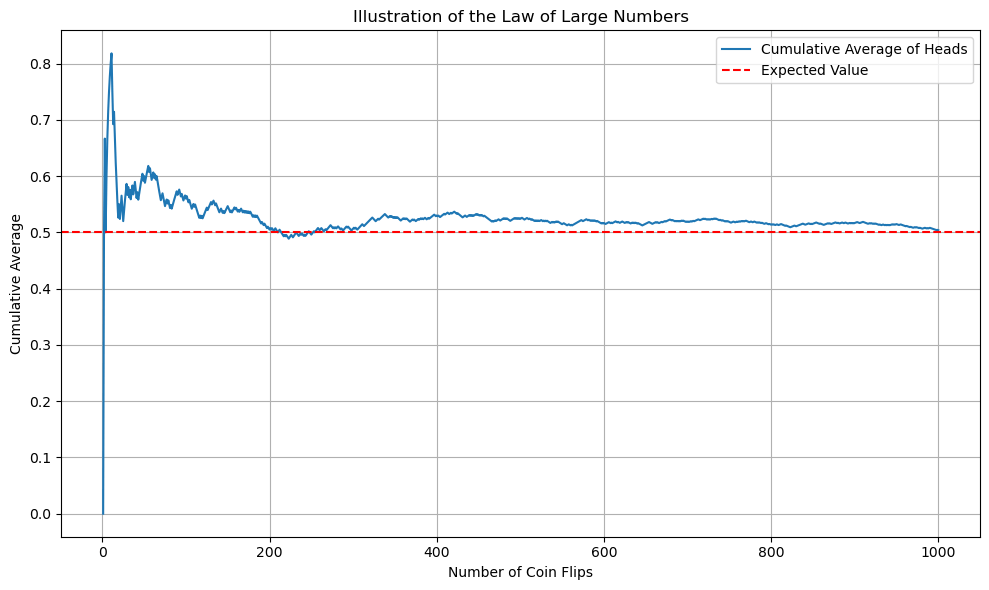
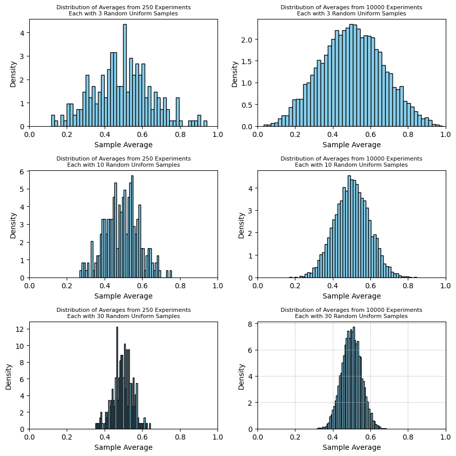

The Law of Large Numbers states that the sample average approaches the distribution mean as n, the number of samples, gets large.

Law of Large Numbers for Coin Flip
fig, axes = plt.subplots(3,2,figsize=(9,9))
def illustrate_clt(n, k, x,y, axes):
"""Illustrate the Central Limit Theorem using uniform distribution.
Parameters:
- n: number of samples taken in each experiment
- k: number of experiments
"""
# Collect the averages from k experiments
averages = [np.mean(np.random.uniform(0, 1, n)) for _ in range(k)]
# Plotting the histogram of the averages
axes[x,y].hist(averages, bins=50, density=True, color='skyblue', edgecolor='black')
axes[x,y].set_title(f'Distribution of Averages from {k} Experiments\nEach with {n} Random Uniform Samples',size=8)
axes[x,y].set_xlabel('Sample Average')
axes[x,y].set_ylabel('Density')
axes[x,y].set_xlim(0,1)
plt.grid(True, which='both', linestyle='--', linewidth=0.5)
n_vals = [3,10,30]
k_vals = [250,10000]
for x in range(len(n_vals)):
for y in range(len(k_vals)):
illustrate_clt(n=n_vals[x], k=k_vals[y],x=x,y=y,axes=axes)
plt.tight_layout()
plt.show()
Central Limit Theorem
The Central Limit Theorem goes further and describes how sample averages of independent observations are distributed if you plotted a histogram of sample averages.
Regardless of the original distribution, the sample average will be distributed as a normal distribution, centered at the true mean with variance \(\frac{\sigma^2}{n}\).

Central Limit Theorem with Varying Sample Size and Number of Trials
fig, axes = plt.subplots(3,2,figsize=(9,9))
def illustrate_clt(n, k, x,y, axes):
"""Illustrate the Central Limit Theorem using uniform distribution.
Parameters:
- n: number of samples taken in each experiment
- k: number of experiments
"""
# Collect the averages from k experiments
averages = [np.mean(np.random.uniform(0, 1, n)) for _ in range(k)]
# Plotting the histogram of the averages
axes[x,y].hist(averages, bins=50, density=True, color='skyblue', edgecolor='black')
axes[x,y].set_title(f'Distribution of Averages from {k} Experiments\nEach with {n} Random Uniform Samples',size=8)
axes[x,y].set_xlabel('Sample Average')
axes[x,y].set_ylabel('Density')
axes[x,y].set_xlim(0,1)
plt.grid(True, which='both', linestyle='--', linewidth=0.5)
n_vals = [3,10,30]
k_vals = [250,10000]
for x in range(len(n_vals)):
for y in range(len(k_vals)):
illustrate_clt(n=n_vals[x], k=k_vals[y],x=x,y=y,axes=axes)
plt.tight_layout()
plt.show()
Data
Ordinary Least Squares
Introduction to OLS
Ordinary Least Squares (OLS) regression is a fundamental statistical method used to explore the relationship between a dependent variable and one or more independent variables.
OLS regression attempts to find the line (in simple regression) or hyperplane (in multiple regression) that minimizes the sum of the squared differences (the "errors") between the observed values and the values predicted by the model.
Single Variable
Simple linear regression involves one independent variable and one dependent variable. The relationship is expressed as:
$$y=\beta_0+\beta_1 x+\varepsilon$$
where y is the dependent variable, x is the independent variable, \(\beta_0\) is the intercept, \(\beta_1\) is the slope, and epsilon is the error.
Multiple Linear Regression
While tougher to visualize, the model can be expanded to have multiple indpeendent variables
$$y=\beta_0+\beta_1 x_1+\beta_2 x_2+\dots+\beta_n x_n +\varepsilon$$
Assumptions
The Gauss-Markov assumptions are fundamental prerequisites that underpin the Ordinary Least Squares (OLS) regression analysis. These assumptions ensure that the OLS estimators are BLUE (Best Linear Unbiased Estimators), which means they are the most efficient linear estimators with the least variance among the class of linear estimators.
Linearity in Parameters
The relationship between the dependent and independent variables is linear in the parameters. This means that the model can be written as
$$y=\beta_0 +\sum_i \beta_i x_i + \epsilon$$
No Multicollinearity
In multiple regression, the independent variables cannot be written as linear combinations of each other. This ensures that the matrix of predictors has full rank, which is necessary for the matrix to be invertible.
Centered Errors
The expected value of the error term conditional on the independent variables is zero:
$$\mathbf{E}[\epsilon|x]=0$$
This implies that the error term does not systematically vary with the independent variables.
Homoskedasticity
The variance of the error terms is constant across all levels of the independent variable(s):
$$\text{Var}[\epsilon|x]=\sigma^2$$
No Serial Correlation
The error terms are uncorrelated with each other.
$$\text{Cov}[\epsilon_i,\epsilon_j|x]=0$$
for \(i\neq j\)
Summary
Violation of these assumptions can lead to biased or inefficient estimators, which in turn can misguide interpretations and conclusions. For instance, heteroscedasticity (non-constant variance of error terms) or serial correlation (correlation between error terms) can result in underestimated standard errors, leading to overly optimistic p-values.
Optimization
The objective function being minimized is the sum of squared residuals (SSR), which is given by
$$SSR=\sum_{i=1}^n(y_i-(\beta_0+\sum_j^p \beta_jx_{i,j}))^2$$
where n is the number of observations, p is the number of independent variables,
\(y_i\) is the observed value of the dependent variable,
\(x_{ij}\) is the value fo the jth independent variable for observation i,
and beta are the parameters to be optimized.
For unregularized linear regression, there is a closed form solution, which makes it quick to calculate.
$$\beta=(X^TX)^{-1}X^Ty$$